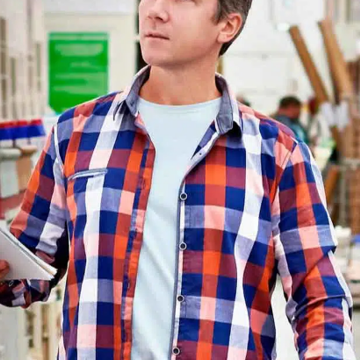
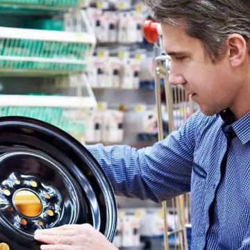
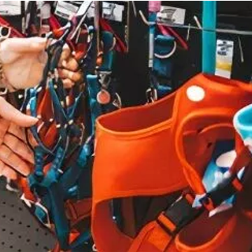

Workline
Sistema de Informação
Com um controle total sobre o seu negócio você evita perdas. Soluções que vão ajudar o seu negócio a crescer.
Entenda qual o melhor sistema de gestão para sua empresa. Seja de serviço, atacado, pequena indústria ou varejo.
Os sistemas Resulth da ATS acompanham o crescimento das atividades da sua empresa. São sistemas integrados, de rápida implementação, fácil utilização e excelente custo-benefício.



Descomplique a gestão do seu negócio.
Agilize e simplifique as operações da sua empresa com as soluções ATS. Elas vão ajudar você nos principais desafios do dia a dia da sua gestão.
Uma breve descrição.
Aderiu ao sistema Resulth Business em 24/08/2010. Atualmente atende com 8 estações de trabalho.
Foi fundada em 10/01/1985 e possui ampla lista de produtos, da base ao acabamento.
Agrícola Canápolis Ltda foi fundada em 09/03/1989. Implantou o sistema Resulth Business em 28/09/2010 com 4 terminais para atendimento.
Produtos para o produtor rural e petshop.
Varejo de roupas para homens e mulheres de todas as idades e com grande variedade de estilos.
Fundada em 29/10/1986 e adquiriu o sistema Resulth Start em 12/04/2011 com duas estações de trabalho.
A Workline Informática é uma empresa constituída para distribuição de sistemas da empresas ATS Informática. Consistem em vendas, implantação e treinamento de software para gestão de empresas (varejo, serviços, atacado e pequenas indústrias).
Atuamos também no desenvolvimento de sistema personalizado para atender necessidades específicas.
Fundada em 01/07/1993 pelo seu representante Ailton Martins Guimarães, formado em Engenharia da Computado pela Universidade Estadual de Minas Gerais campus Ituiutaba, 2003.